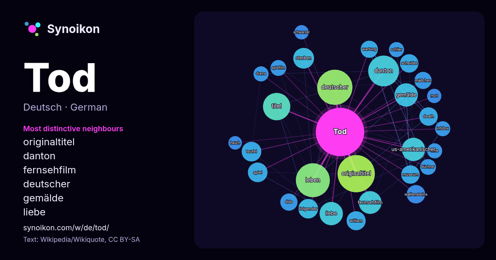

Deutsch · beliebtes Wort
Tod
“death” · Die Wörter in seinem Umfeld aus 1102 Vorkommen in Wikipedia, Wikiquote.

Typischste Nachbarn
- originaltitel 57×
- danton 43×
- fernsehfilm 23×
- deutscher 23×
- gemälde 21×
- liebe 20×
- sterben 19×
- us-amerikanischer 18×
- teufel 17×
- scheidet 16×
- wallensteins 16×
- titel 16×
- death 15×
- dido 14×
- wartung 14×
- büchner 12×
- leben 12×
- mädchen 11×
- william 11×
- spielfilm 11×
× = wie viel häufiger als in allgemeinem Wikipedia-Text.
Häufigste Nachbarn
- originaltitel 61
- deutscher 55
- leben 51
- danton 42
- titel 33
- gemälde 24
- liebe 24
- us-amerikanischer 24
- fernsehfilm 23
- sterben 19
- folgender 17
- spiel 17
- teufel 17
- william 16
- death 15
- friedrich 15
- museum 15
- scheidet 15
- wallensteins 15
- dido 13
Im Kontext
- Der Tod (wie englisch death und to die von germanisch dauþus ‚Tod‘, und *dau bzw. dawjan, ‚sterben‘) ist (als sogenannter biologischer Tod bei einem Lebewesen) Wikipedia snippets · Tod
- Tod steht für: Tod, das Ende des Lebens – als Ereignis – oder der dauerhafte Zustand nach diesem Ereignis Hirntod, eine medizinische Todesdefinition Tod Wikipedia snippets · Tod (Begriffsklärung)
- kleine Tod steht für: eine Bezeichnung für den Orgasmus, siehe Orgasmus #Parallelen zwischen Orgasmuserleben und Todesvorstellungen Der kleine Tod (La Petite Wikipedia snippets · Der kleine Tod
- Der Tod und das Mädchen ist ein sowohl schauriges als auch erotisches Motiv, das seit dem 16. Jahrhundert in verschiedenen Kunstgattungen verarbeitet Wikipedia snippets · Der Tod und das Mädchen
- Der Tod steht für: die Personifizierung des Todes, siehe Tod #In Literatur und Kunst Der Tod (Tarot), eine Trumpfkarte des Tarot Der Tod (Mann), Prosaskizze Wikipedia snippets · Der Tod
- Sophia, der Tod und ich ist ein deutscher Spielfilm von Charly Hübner aus dem Jahr 2023 mit Dimitrij Schaad, Anna Maria Mühe, Marc Hosemann und Johanna Wikipedia snippets · Sophia, der Tod und ich
- Als Dr. Tod werden bezeichnet: ein Arzt im Vernichtungslager Auschwitz, siehe Josef Mengele ein deutscher Anatom (1945–2026), siehe Gunther von Hagens Wikipedia snippets · Dr. Tod
- Dantons Tod ist ein Drama in vier Akten von Georg Büchner, das von Mitte Januar bis Mitte Februar 1835 geschrieben wurde. Im selben Jahr erschien eine Wikipedia snippets · Dantons Tod
Weitere Wörter
- Arbeit
- Brücke
- Essen
- Familie
- Geld
- Geschichte
- Gesundheit
- Gold
- Gott
- Kunst
- Leben
- Macht
- Natur
- Wahrheit
- Wasser
- Wissenschaft
- Zug
Vorberechnet am 2026-10-09 mit Standardeinstellungen (±5 Wörter, mittlerer Korpus). Die interaktive Karte kann mit Live-Daten aktualisieren.
Maschinell übersetzte Oberfläche; Korrekturen willkommen.